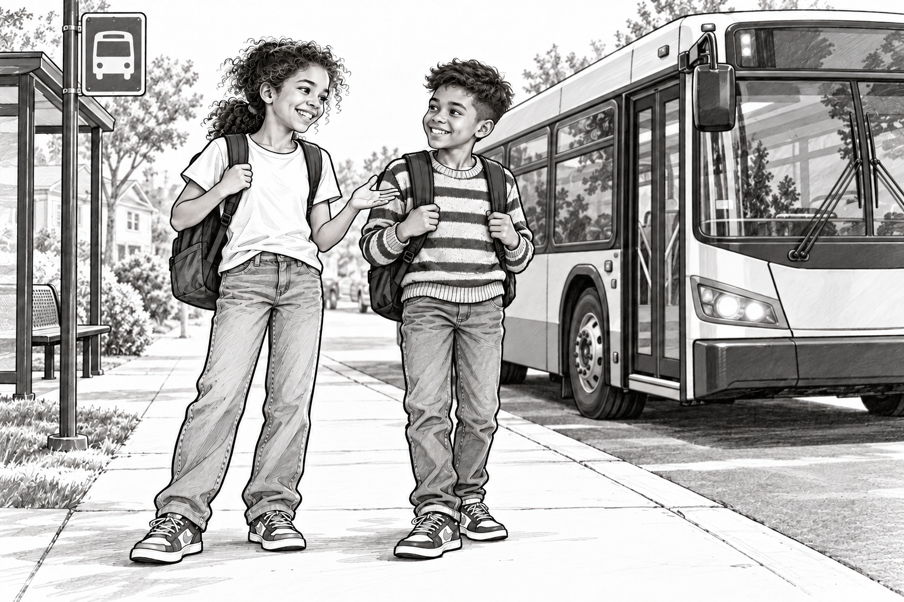
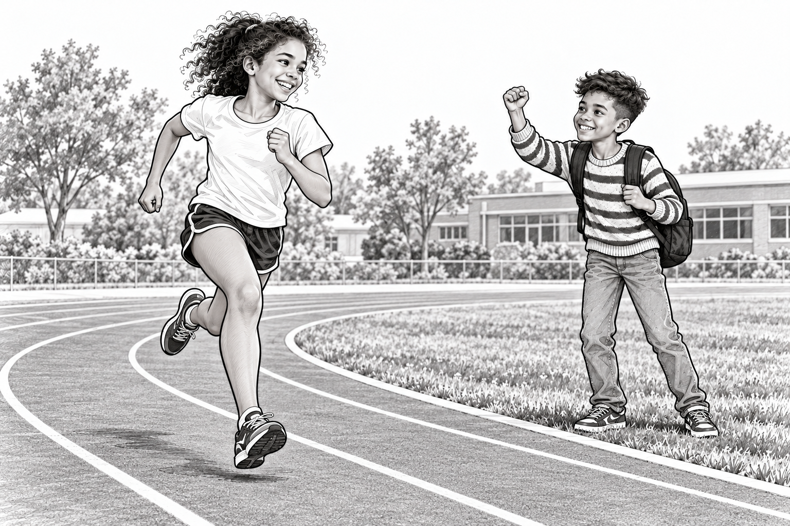

Ruth et la ligne de départ invisible

Les championnats de l'arrêt d'autobus
Ruth avait treize ans et pouvait transformer presque n'importe quoi en épreuve d'athlétisme.
Un long corridor ? Un endroit pour s'entraîner au sprint.
Un coin de pelouse ? Un endroit pour pratiquer le saut en longueur.
Attendre l'autobus municipal avec Raph ? Apparemment, c'était aussi de l'entraînement.
« Tiens-toi sur une jambe », dit-elle.
Raph leva les yeux de son carnet. « Pourquoi ? »
« Pour travailler ton équilibre. »
« Je me prépare pour un débat sur la Coupe du monde. »
« Tu peux débattre sur une jambe. »
Il essaya. Son sac à dos le fit pencher sur le côté.
Ruth le rattrapa par la manche.
« Excellent départ, dit-elle. Très spectaculaire. »
Ils allaient à la même école et prenaient l'autobus municipal ensemble. Ruth vérifia le numéro de l'autobus avant de monter. Raph vérifia si elle était prête à entendre pourquoi son équipe de football préférée était meilleure que celle d'Izzy.
Elle ne l'était pas.
Il le lui expliqua quand même.

Pas seulement rapide
À l'heure du dîner, ils allèrent à la piste de l'école.
Raph se plaça à côté du couloir de Ruth avec un chronomètre.
« Prête ? » demanda-t-il.
Ruth plaça ses pieds derrière la ligne de départ.
Elle adorait ce moment : la seconde de silence avant que tout se mette en mouvement.
« Partez ! »
Elle courut.
Après le premier virage. Devant les gradins vides. Jusqu'à la ligne d'arrivée.
Raph appuya sur le bouton.
Puis il eut l'air inquiet.
« Je crois que je l'ai arrêté un peu avant que tu aies fini. »
« Un peu comment ? »
« Juste assez pour t'aider. »
Ruth éclata de rire et se pencha pour reprendre son souffle.
L'athlétisme, ce n'était pas seulement courir vite. C'était essayer encore, même quand on avait les jambes molles comme des nouilles — ou quand Raph tenait le chronomètre.
« Encore une fois, dit-elle. Cette fois, attends que je franchisse la ligne. »
Raph leva le chronomètre. « Tu peux y arriver ! »
Un couloir pour chacun
Cet après-midi-là, Izzy les rejoignit au parc avec un bâton de hockey.
« Est-ce que mon épreuve peut se jouer avec ça ? » demanda-t-il.
Raph avait apporté un ballon de football.
Ruth observa cette drôle d'équipe.
« D'abord, un relais. »
Ils utilisèrent une chaussette roulée comme témoin.
Raph courut sa partie du parcours. Izzy prit la chaussette et s'élança. Ruth courut la dernière partie, puis se retourna pour les encourager pendant un autre tour.
Personne ne pensa à les chronométrer.
Cela ne dérangea vraiment personne.
Ruth brandit la chaussette au-dessus de sa tête.
« Nouveau record d'équipe ! »
« Quel record ? » demanda Izzy.
« Le plus de plaisir en transportant du linge. »
Après l'histoire
Quelle épreuve originale ajouterais-tu à la compétition d'athlétisme de Ruth dans le jardin ?